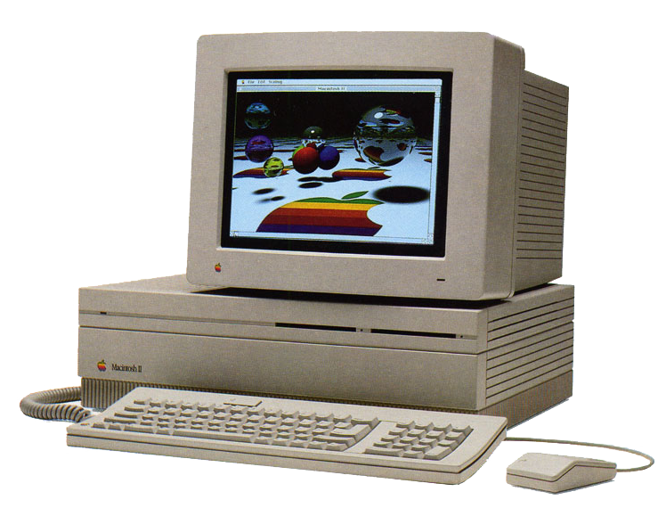
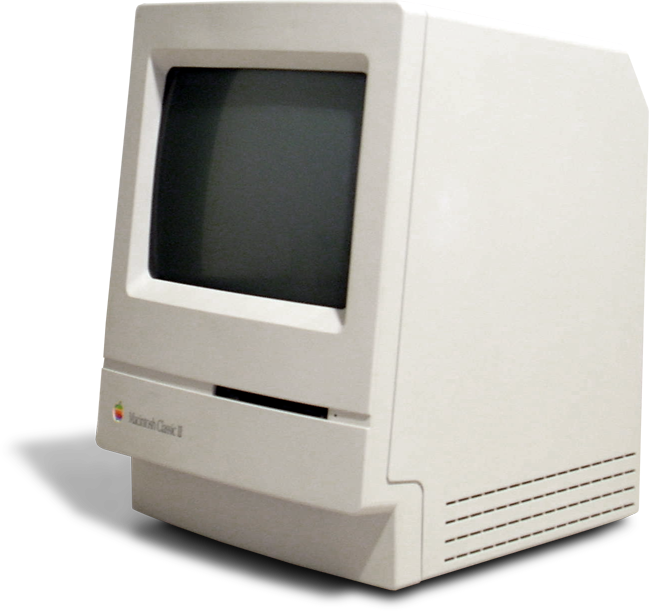
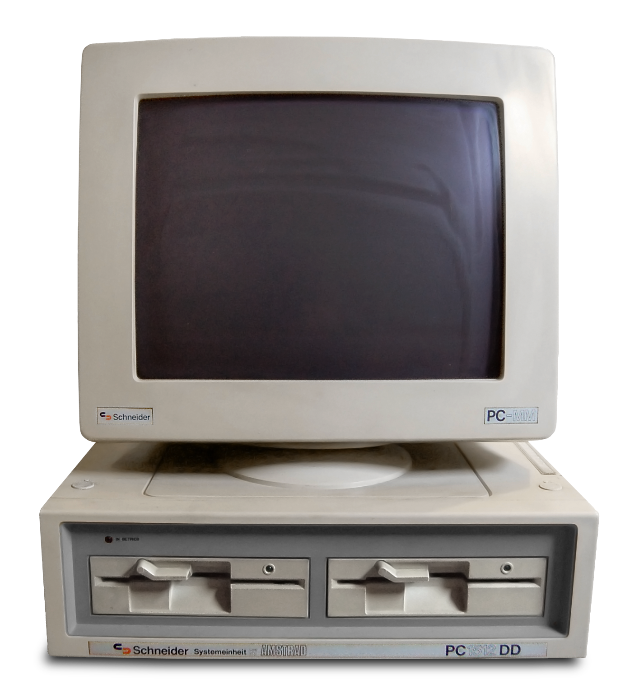
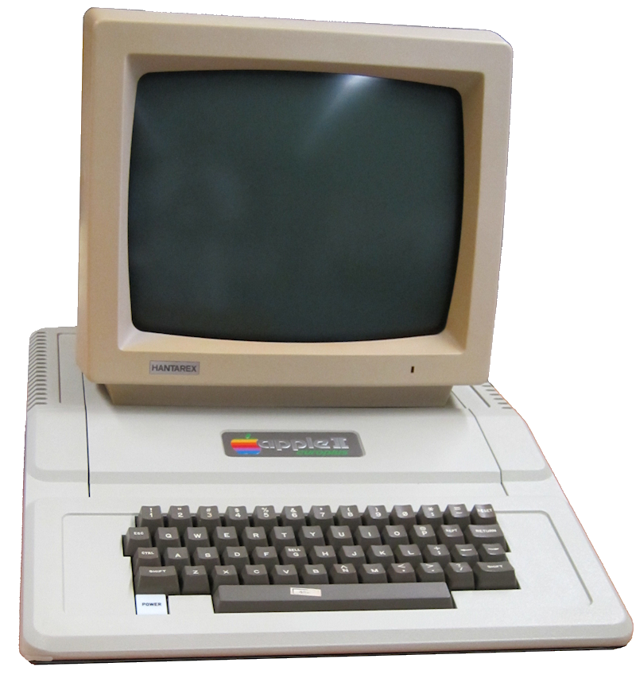

 El Macintosh II, conocido también como "Mac II" fue un modelo de ordenador de la serie Apple Macintosh que apareció en 1987. Estaba equipado con un procesador Motorola 68020 con una frecuencia de reloj de 16 MHz y una memoria de 1 MB de SIMM y podía ampliarse hasta 20 MB, y con la extensión FDHD hasta 68 MB. El disco duro opcional tenía una capacidad de 20 MB y estaba conectado por medio de SCSI. Para tarjetas ampliadoras había 6 entradas NuBus. A diferencia del popular Macintosh Plus también podía ampliarse por medio del bus SCSI, al que podían conectarse varios dispositivos externos, tales como un escáner, varios discos duros, unidades de CD-ROM o unidades de cinta para realizar copias de seguridad. El Macintosh II fue el primer Macintosh que se fabricó de forma modular y no tenía el monitor integrado en la carcasa. Sirvió de base para una serie completa de ordenadores Macintosh II, tales como el Macintosh IIx, el Macintosh IIsi o el Macintosh IIfx.
El Macintosh Classic fue un computador personal fabricado por Apple Computer. Introducido el 15 de octubre de 1990, fue el primer Apple Macintosh en venderse por menos de 1000 dólares.2 Su producción se debió al éxito del Macintosh Plus y del SE. El Classic era muy similar a su predecesor, y debido a los limitados avances tecnológicos, usaba la misma pantalla TRC monocroma de 9 pulgadas (23 cm) y resolución de 512 × 342 pixeles y su rendimiento era bajo por el límite de 4 Mb de memoria, que también poseían los antiguos Macintosh.1 Sin embargo, el Classic contaba con varias mejoras frente al Macintosh Plus: era un 25% más rápido que este último e incluía un disquete de 3,5 pulgadas (9 cm), el Apple SuperDrive, como estándar. El Classic era una adaptación del diseño industrial del Macintosh 128K de Jerry Manock y Terry Oyama, como lo era el anterior Macintosh SE. Apple lanzó dos versiones que iban de los 1000 a los 1500 dólares. Las reacciones de los críticos fueron diferentes, la mayoría criticaba el desempeño de su lento procesador y a la falta de slots de expansión. Todos coincidían en que el Classic solo servía para procesar textos, hojas de cálculo y bases de datos. El bajo precio y la disponibilidad de software educativo permitió que se hiciera popular en sector de la educación. Se vendió junto al más potente Macintosh Classic II durante 1991 hasta su discontinuación el año siguiente.
En el momento en el que la empresa se decidió a fabricar ordenadores, ninguna división de la empresa tenía ni los conocimientos ni los medios para la producción de estos, de modo que su presidente, Alan Michael Sugar, decidió contratar un grupo externo para la elaboración de un primer prototipo allá por 1983. Este primer prototipo resultó ser una auténtica decepción. Con un microprocesador 6502, un solo color de grises, sin paleta de colores, y mapas de memoria RAM mal diseñados, el proyecto fue desechado. Entre tanto, Amstrad tenía los diseños iniciales del teclado y casete. De modo que Sugar, a principios de agosto, contrata un nuevo equipo desarrollador. Roland Perry recibe la tarea de sacar a flote el, inicialmente, malogrado proyecto. El siguiente paso consistió en contratar una empresa que se ocupara del lenguaje de la máquina y del firmware. Después de recibir alguna negativa, por lo dudoso del proyecto, Perry terminaría en la ciudad de Dorking, donde se alojaba la compañía Locomotive Software, y a la cual convenció de la viabilidad del proyecto. Eso sí, Locomotive solicitó un cambio importante en el mismo: la sustitución del micro 6502 por un Z80, para el cual ya tenía un BASIC escrito. Posteriormente se contratarían los servicios de MEJ electronics para diferentes cambios en la estructura del prototipo. A mediados de agosto se creó el esquema para las ROM's del sistema operativo, y fueron finalizadas en septiembre. Una variación sobre la implementación del chip de sonido en otros ordenadores es que los CPC producen sonido estéreo: el canal 1 como la izquierda, el 2 como el centro y el 3 como la derecha. El equivalente de Yamaha de este chip se usó más tarde en los ordenadores Atari ST. El lenguaje estándar de la máquina era BASIC, aunque con diversos programas de utilidades era posible utilizar otros. Por lo general, cuando un juego salía en formato para los diferentes ordenadores de 8 bits de la época, la versión de Amstrad superaba en el aspecto gráfico a la del Spectrum en el ámbito de colores (si bien la inmensa mayoría de usuarios en España utilizaban un monitor monocromo de fósforo verde, por lo que la ventaja se perdía) no en resolución gracias a su chip gráfico (un Motorola 6845) pero solía quedar por debajo de la del Commodore 64. Superaba al Commodore 64 en gráficos vectoriales pero en la mayoría del resto de juegos quedaba por detrás. Teniendo en cuenta que su diseño es 2 o 3 años posteriores a los de estas máquinas, se suele considerar por comparación que el Amstrad era una máquina retrasada a su tiempo en lo que a prestaciones técnicas se refiere.
 El Amstrad PC1512 fue la computadora de Amstrad mayormente compatible con el IBM PC, fabricada por primera vez en 1986. Más tarde fue sucedido por el Amstrad PC1640. Se lanzó por 225 000 pesetas 1 (£499 en UK) y se vendió muy bien, ya que fue una de los primeros PC baratos en Europa. Ayudó significativamente a abrir el mercado europeo de computadoras personales tanto a consumidores como a empresas, y la publicidad del PC1512 de Amstrad estaba dirigida a hogares en lugar de oficinas. La influencia del 1512 fue tal que la revista de PC del Reino Unido PC Plus originalmente se enfocó en "Amstrad PC 1512 y compatibles", ya que la compra de otros modelos de PC en el hogar en ese momento era rara. El PC1512 se vendía con 512 KB de RAM; podría actualizarse a 640 KB de RAM con 16 chips de RAM dinámica 4164-120 (64KBx1 por chip) y configurando un jumper. 2 La salida de vídeo era compatible con el estándar CGA, con una extensión que permite usar los 16 colores en el modo gráfico de 640×200. La CPU tanto del PC1512 como del PC1640 posterior era un Intel 8086 a 8 MHz, que era suficiente para jugar The Secret of Monkey Island, Maniac Mansion y Prince of Persia. La fuente de alimentación se encontraba en el monitor, lo que dificultaba la actualización. Amstrad obtuvo la licencia de MS-DOS 3.2 y de DOS Plus (de Digital Research), que era ampliamente compatible con MS-DOS e incluía algunas características de CP/M y la capacidad de leer discos CP/M. Solo uno de estos sistemas operativos podría usarse a la vez. También obtuvieron la licencia del sistema de ventanas GEM, que admitía el hardware CGA personalizado del 1512. El PC1512 fue sucedido por el PC1640, que tenía 640 KB de RAM y un chipset de gráficos compatible con EGA (aunque solo el modelo ECD podía mostrar todos los modos EGA). Ambos modelos incluyen uno o dos disquetes de 5¼ pulgadas, y opcionalmente un disco duro (de 10 ó 20 MB). Amstrad también intentó ampliar su participación en el mercado vendiendo computadoras en los Estados Unidos. En dicho país el PC1512 se comercializó como el PC6400 e incluía un disco duro de 20 MB y la actualización de RAM a 640 KB. El PC1512 también se vendió como el Sinclair PC500. Los dispositivos de entrada suministrados con la máquina fueron notables. El ratón era de Amstrad, siendo incompatible con los ratones serie comunes de esa época. Fue compatible con algunos juegos, incluido el Elite, pero muchos programas de DOS tuvieron problemas con él. El teclado tenía un puerto de joystick compatible con Atari para joysticks digitales. Los movimientos y botones del joystick se asignaron a códigos de teclado no utilizados, lo que permitía que el joystick se utilizase en muchos juegos de DOS que se escribieron para controlarlos mediante teclado. La serie fue algo inusual por el hecho de que tenía un control de volumen físico del altavoz interno. Esto permitió al usuario hacer que la máquina emitiera un pitido silencioso, o sonoro, desde el momento del arranque. Esta innovación aún no está presente en la mayoría de los PCs modernos: la señal acústica tradicional sigue siendo un dispositivo de volumen fijo, aunque los altavoces externos conectados a través de hardware de sonido dedicado suelen tener un control de volumen. Mientras que el PC de IBM (y casi todas los PC compatibles) tenía una fuente de alimentación alojada en la caja principal, la fuente de alimentación del PC1512 estaba integrada con la de su monitor. El monitor tenía suficiente ventilación para enfriarse por convección, en lugar de necesitar un ventilador. El PC1512 era por lo tanto más silencioso que otros PC. Circularon rumores de que un PC de Amstrad podría sobrecalentarse y, si bien los propietarios existentes notaban que esto no sucedía, los nuevos compradores se desanimaron. Como resultado, los modelos posteriores tenían un ventilador de refrigeración integrado en la caja principal. 3 Otro rumor fue, por ejemplo, la sugerencia de que había problemas con la fuente de alimentación "sin blindar" en el monitor, que afectaba al disco duro que podía instalarse opcionalmente en la parte posterior de la caja, y que esto se solucionaba cubriendo de papel de aluminio o cinta de aluminio la parte posterior de la caja o la parte inferior del monitor, para proteger el disco duro.
Las primeras computadoras Apple II estuvieron a la venta el 5 de junio de 1977, basadas en un microprocesador 6502 de MOS Technology funcionando a 1 MHz, con 4 KiB de RAM, 12 KiB de ROM con el lenguaje de programación Integer BASIC, y una interfaz para grabadores de casetes de audio. El controlador de vídeo mostraba en la pantalla 24 líneas por 40 columnas de texto solamente en mayúsculas, con salida de vídeo compuesto NTSC para mostrase en un monitor, o en un aparato de televisión por medio de un modulador de RF. Por parte de terceros, estaban disponibles tarjetas de expansión que mostraban 80 columnas y soportaban minúsculas. Los usuarios podían guardar y recuperar programas y datos en casetes de audio. Otros lenguajes de programación, juegos, aplicaciones y otros softwares estaban también disponibles en casetes. El precio al por menor original fue 1.298 dólares con 4 KiB RAM y 2638 dólares con 48 KiB RAM. Más adelante se comercializó el Disk II, una unidad de disquete de 5¼ pulgadas externa, junto con la tarjeta controladora que se enchufaba en un slot de expansión (ranura) de la computadora (generalmente el slot # 6). Esto permitió el almacenamiento y posterior recuperación de los datos de forma mucho más eficiente y rápida. Esta interfaz de control de disco, creada por Steve Wozniak, todavía se considera como una maravilla de diseño de ingeniería. La tarjeta controladora tenía muy poco soporte de hardware, encargándose el software de proporcionar la codificación necesaria. El controlador también usó una forma de codificación GCR (Group Code Recording o Grabación de Códigos por Grupo), que era más simple y más fácil de implementar en software que el más comúnmente usado MFM (Modified Frequency Modulation). Esto redujo significativamente el costo total, dejando el precio total del sistema suficientemente bajo para los usuarios caseros. También hizo fácil que desarrolladores de software propietario pudieran desarrollar formas de protección para sus programas, al poder usar trucos como cambiar el formato de bajo nivel de los sectores o inclusive moviendo el cabezal de la unidad entre las pistas. Sin embargo, otros grupos vendieron software como Copy II Plus y Locksmith que podían eliminar esas restricciones. El diseño abierto de Wozniak y las múltiples ranuras de expansión del Apple permitieron una extensa variedad de dispositivos de terceros que ampliaban las capacidades de la máquina. Controladores de puerto serie, controladores mejorados de vídeo, tarjetas de memoria, discos duros, y componentes de red estaban disponibles para este sistema en esos días. Había también tarjetas de emuladores, tales como la tarjeta Z80 que permitió que el Apple utilizara el procesador Z80 de Zilog y correr una multiplicidad de programas desarrollados bajo el sistema operativo CP/M tal como la base de datos dBase II y el procesador de texto WordStar. También había una tarjeta 6809, fabricada por terceros, con la cual se podía correr el OS-9 Level One. La tarjeta de sonido Mockingboard mejoró muchísimo las capacidades audio del Apple. Incluso se fabricaron las llamadas tarjetas aceleradoras, que duplicaban o cuadruplicaban la velocidad de la computadora. Mención aparte merece una familia de tarjetas que en realidad eran un PC en tarjeta, algunas con memoria propia, las primeras usando la del equipo anfitrión. Utilizaban el sistema de vídeo y teclado del Apple como una emulación del PC, al igual que varias tarjetas. Podían usar las unidades de disco presentes (con los problemas de formato si no eran Unidisk), y crear una partición en el disco duro desde el que ejecutar MS-DOS. Los procesadores iban del Intel 8086 al Intel 80386, existiendo una versión específica para los Apple II GS.
Desarrollador= Santiago Herbes